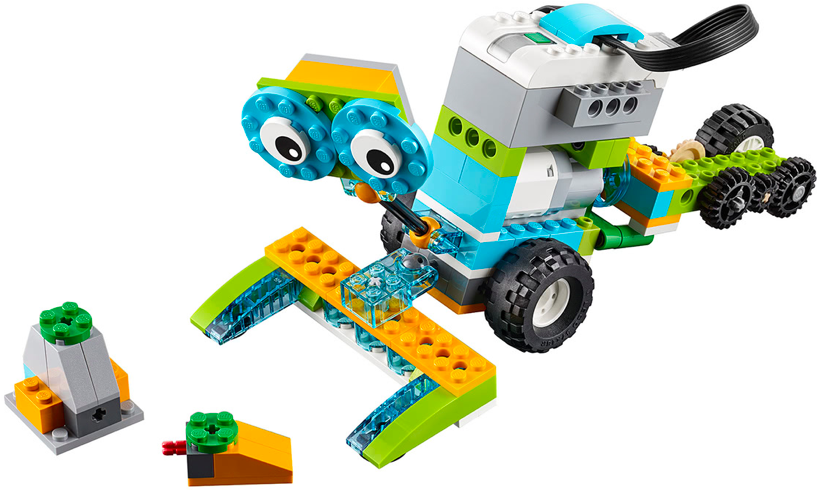
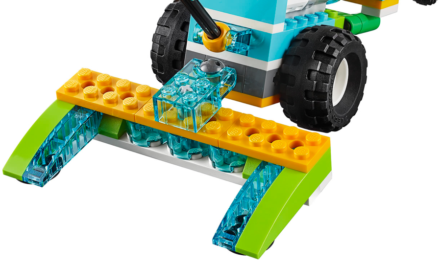
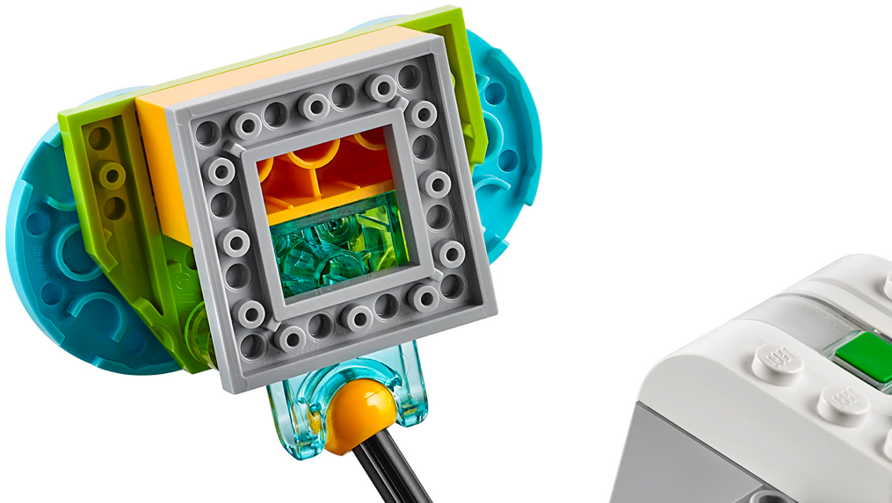
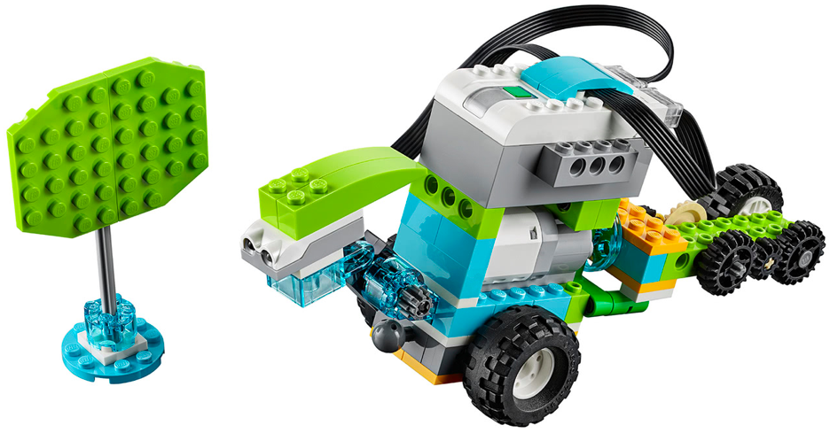
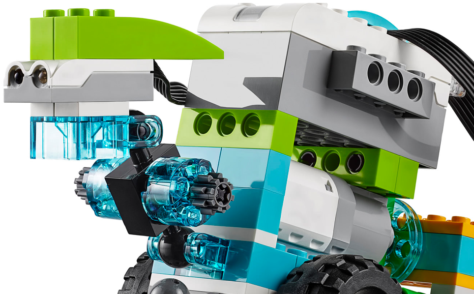
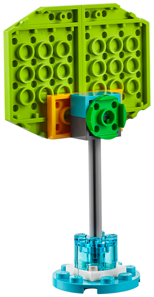

En este proyecto el alumno debe construir la base del los dos siguientes montajes. Debe hacer una serie
de retos iniciales para ver como se realiza el movimiento y como se traslada de un sitio a otro.
El primer montaje tiene las instrucciones para construir la parte de los engranajes. Este robot será la base
para los dos siguientes robots.
Los dos robots siguientes no tienen instrucciones y solo disponen de 3 fotos. Se construyen sobre la
base del montaje anterior.
El alumno debe comprender cómo funciona el mecanismo que permite realizar giros al robot y de como el cambio del sentido de motor cambia la posición del mecanismo.
• Hacer que el robot vaya de un extremo de la mesa sin chocar con el tope.
• Usar el mecanismo para girar y de esta forma, que el robot vaya a un extremo de la mesa y vuelva.
• Repetir anterior pero esperar al sonido de una palmada.



• Hacer que el robot vaya a por una las piezas y las recoja con las pinzas.
• Hacer que el robot haga dos viajes, recogiendo las piezas en cada viaje.
• Repetir pero esperando al sonido de una palmada para salir.



• Hacer que robot vaya hasta el obstáculo y cuando lo detecte haga un sonido.
• Hacer que el robot vaya hasta el obstáculo y cuando lo detecte de la vuelta y regrese.
• Repetir anterior usando el sensor de proximidad para que al detectar una mano, inicie la secuencia.
{kind=link}
{kind=link}